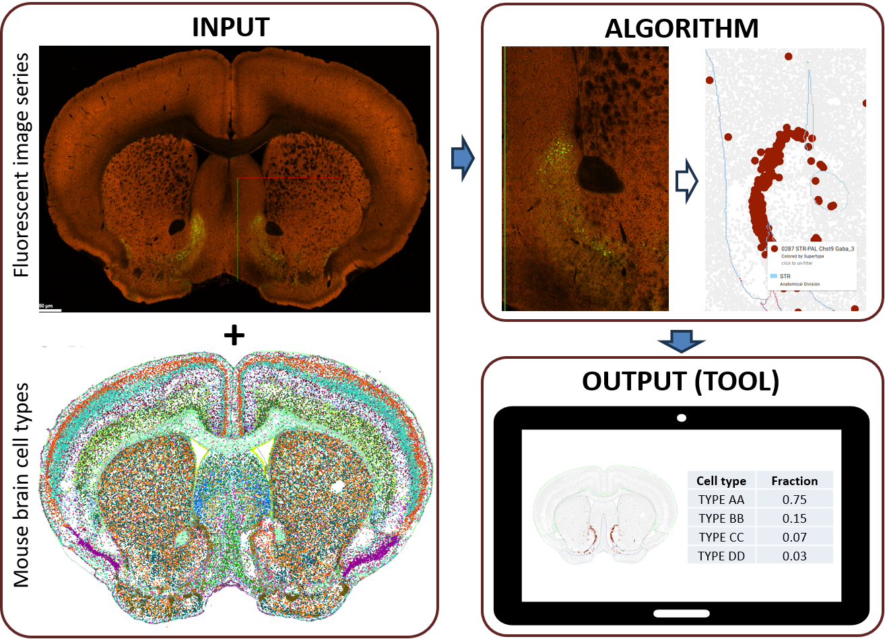

About this Challenge
Transgenic lines and viral tools provide highly valuable resources for targeting subpopulations of cells in the brain of mouse (and other species). The recent identification of >5,000 mouse brain cell populations with distinct gene expression patterns and spatial profiles provides opportunities not only to create new cell type-specific genetic tools, but also to better characterize the cell type specificity of existing genetic tools widely used in neuroscience or newly generated in a lab. Accurately defining this connection between genetic tools and known cell types represents a critical step in interpreting the results of experiments using these tools, from functional assays to potential gene therapies. A detailed cell type characterization of the labeled cells can be achieved through a combination of single cell RNA-sequencing and cell sorting; however, such methods take time and costly and are prone to bias. A method for directly inferring cell types from fluorescent images without the need for additional experiments would be immediately applicable to thousands of existing genetic tools, greatly improving their utility and interpretability. Entrants are tasked with creating an algorithm that will accurately match fluorescent images to the most likely cell types and/or to present the algorithm as part of a user-friendly tool like MapMyCells. Although images span the whole brain, this challenge is focused on defining cell types in primary visual cortex (VISp).
This challenge includes images and associated cell type specificity for anonymized genetics tools from the Genetics Tools Atlas, a searchable web resource representing information and data on enhancer-adeno-associated viruses (enhancer AAVs) and mouse transgenes. Multiple modalities for summarizing data are included as part of the atlas, but only coronal sections collected using Serial Two-Photon Tomography (STPT) sections will be directly included as part of the challenge. Cell type specificity is assessed by applying single cell RNA-sequencing (SMART-Seq v4) on fluorescently labeled cells from each genetic tool, and then mapping these cells to the published taxonomy of cell types in whole mouse brain (Yao et al, 2023), which are available in the Allen Brain Cell Atlas.
Entry Details
To be considered for the competition, please submit [AT ???? LINK]: 1) subclass and optional cell type assignments for each query image series, 2) the tool (or a link to the tool) for computing and displaying these results, and 3) your name and contact information (see details below). All submissions must be received by 12:00pm (Pacific), on ????? ##, 2025 to be considered for the competition.
If you have any difficulties with submission, please contact Rachel Hostetler.
Participants will be scored based on three components, with a winner selected for each category independently:
- Mapping accuracy: This winning algorithm for this category will be selected based on a quantitative assessment of accuracy of mapping to the whole mouse brain cell types from Yao et al 2023 included in the Allen Brain Cell Atlas at the "subclass" level of the hierarchy. Successful submissions will complete the mapping accuracy table that has one row for each test genetic tool and one column for each subclass found in VISp. Entries should represent the predicted fraction of cells mapping to a given subclass (e.g., rows sum to 1).
- Utility of the tool: Creation of a user-friendly tool that allows users to input one or more query STPT image, apply the submitted mapping algorithm, and then receive the most likely cell type results as output. This tool will optionally connect output results back to the Allen Brain Cell Atlas or other Allen Brain Map knowledge of cell types in some way. The definition of tool is intentionally left open, but some examples could include a website, an interactive table, a downloadable software package, or an R Studio or Jupyter notebook. This winner will be selected by a panel of judges who will be grading on the following criteria: (1) usability (does it do something), (2) ease of use (can I figure out how to use it easily), (3) functionality (does the output make sense), and (4) sleekness (does it look cool and make you want to use it). The accuracy of mapping is not considered in this category.
While not explicitly assessed for accuracy, we encourage entrants to map to more refined levels of the cell type hierarchy (e.g., supertype, cluster) and/or to brain regions outside of VISp. Broader mapping would improve the utility of the tool (second category) and would be considered in the unlikely event of a tie for mapping accuracy (first category).
Winners will have an opportunity to present their work at a to-be-scheduled webinar and will have their tool featured on Allen Brain Map (brain-map.org). All entrants agree to have their submissions publicly linked at Allen Brain Map. Entrants may also be contacted for potential follow-up opportunities such as collaborative science or inclusion of tools in Allen Institute data work flows.
Primary image series data access
Images are divided into a training data set with 248 genetic tools (where cell type assignments are provided) and a test data set with 248 genetic tools (where entrants are asked to predict cell type assignments). STPT image series and associated metadata are included for each genetic tool. This information is provided as an interactive BioFileFinder (BFF) spreadsheet.
ACCESS THE TEST AND TRAINING DATA HERE [TO LINK OUT TO BioFile Finder SOON] <-- need to create this BioFileFinder (BFF) spreadsheet
In this spreadsheet, each row is a different genetic tool, and columns correspond to the following:
- MapMySectionsID: A unique, anonymized identifier for each experiment. These identifiers will be linked to actual experiment identifiers in the Genetics Tools Atlas at the conclusion of the challenge.
- Data Set: Either “Training” to indicate this experiment is part of the training data set or “Test” to indicate it is part of the test data set (in which case “Cell Type Assignments” will be blank)
- Genetic Tools Type: Either “Enhancer AAV” or “Mouse transgenic line” to indicating the underlying type of genetic tool. Note that the training and test data sets each include some enhancer AAVs and some mouse transgenic lines.
- STPT Data File Path: Link to the image series in OME-Zarr format. This is the primary data required for the challenge. See the Useful links section below for resources showing how to access and use these data.
- STPT Thumbnail Image: Link to a small thumbnail image of one section of the genetic tool that intersects VISp for quick viewing. These are potentially useful as a sanity check of algorithm results or for inclusion in user-created tools.
- Neuroglancer File Path: Link to same data for visualization using Neuroglancer. See the Useful links section below for resources showing how to use Neuroglancer.
- CCF Registered Image File Path: Link to zip file containing quantified intensities of red and green channels for each 25um CCF voxel in the STPT image series. See THIS LINK TO A DIFFERENT NEW JUPYTER NOTEBOOK for how to access and use these data.
- Target_Cell_Population: Cell populations targeted with this experiment. Note: This is not necessarily the cell populations actually identified!
- Qualitative Image Assessment: Sets of comma-separated qualitative assessments for labeling strength, labeling density, and labeled cell populations made based on review of epifluorescence image data for the same genetic tool. In cases where more than one assessment is included, cells from all of the listed types were labeled. While these calls do not constitute quantitative validation, they are likely to reflect actual cell type assignments in cases when SMART-Seq v4 data is missing. Note that a value of "Neuron" indicates that the specific neuronal populations targeted could not be accurately assessed in that experiment.
- (Quantitative Cell Type Assignments): The remaining columns reflect quantitative cell type information from up to 48 cells from a given genetic tool collected using SMART-Seq v4 and aligned to whole mouse brain cell types from the Allen Brain Atlas (links above) at the "subclass" level of the hierarchy. These columns represent the ground truth data to be targeted by computational algorithms (more details below).. Numbers in these columns represent the count of cells from a given experiment that mapped to the corresponding subclass.
Restricting analysis to primary visual cortex (VISp)
This challenge focuses only on cell types in primary visual cortex (VISp). A few resources are provided to help entrants constrain their data and associated analyses accordingly:
- Image registration to Allen Common Coordinate Framework (CCF): A large majority of STPT image series are registered to the CCF, meaning that every X-Y-Z location in STPT images can be assigned an X-Y-Z location (“voxel”) in a standard anatomical reference space along with an associated brain region name. Similarly, MERFISH image series on the Allen Brain Cell Atlas are also registered to the CCF, meaning each voxel also contains it’s cell type composition (from one mouse). More details on CCF registration and data access for STPT is listed above. CCF registration and data access for MERFISH data can be found in Jupyter notebooks accompanying the Allen Brain Cell Atlas.
- Identifying subclasses in VISp: For the purposes of this challenge you can assume that all cells in VISp map to one of the subclasses listed in the "Quantitative Cell Type Assignments" columns described above. A list of subclass, brain region, and all other abbreviations can be found at this link.
- Known spatial localization of cell types: The relationship between cell types and brain regions and cell types (including VISp) is described in detail in Yao et al 2023. These relationships can also be explored interactively using Annotation Comparison Explorer (“Mouse cell type classification” - “Spatial localization of brain cell types”).
Spatial localization of mouse brain cell types
The mouse whole brain transcriptomics cell type atlas contains 5,322 cell types (clusters) that are organized in a hierarchical manner with nested groupings of 34 classes, 338 subclasses, 1,201 supertypes and 5,322 clusters. The anatomical location of each cell type has been annotated using a comprehensive brain-wide MERFISH dataset with a total of ~4 million segmented and QC-passed cells, probed with a 500-gene panel and registered to the Allen Mouse Brain Common Coordinate Framework (CCF v3). The MERFISH data not only provide accurate spatial annotation of cell types at subclass, supertype and cluster levels, but also reveal fine-resolution spatial distinctions or gradients for cell types.
In addition to gene tools image series, cell type information from this atlas is required or recommended to succeed in this challenge. The spatial location of every mouse cell type can be interactively explored using the Allen Brain Cell Atlas at this link.
Spatial data and associated metadata can be accessed for off-line use in the following locations:
- MERFISH raw data images: Data from MERFISH experiments can be found in the Brain Image Library (BIL) here. The relevant mouse has ID=638850.
- CCF locations of mouse brain cells: Point-by-point mapping of the location of each cell in the original MERFISH coordinate space and the CCF is available here. These data include cell type assignments for each cell, and this page also includes links to related data sets and to Jupyter notebooks for data access.
- Code comparing cell types and anatomic structures: Specifically, this Jupyter notebook describes how to access and use the data above, relating CCF coordinates and mouse brain cell types.
- Acronym list: This table includes a list of acronyms and abbreviations for brain regions, genes, and cell types used in mouse whole brain cluster names, along with identifiers for relevant data sources (e.g., Mouse Brain Atlas, UBERON, CL).
Key considerations
NEEDS REVIEW!!!!! Some things to consider for this challenge:
- All images should have a single channel with signal. Signal in the channel with the least abundance can be ignored.
- Genetic tools can label multiple cell types. In such genetic tools it is typically harder to identify labeled cell types than in ones when a single cell type is labeled.
- It is typically more challenging distinguishing between GABAergic interneurons subtypes than between glutamatergic and non-neuronal cell types. For example, glutamatergic neurons tend to be highly localized by layer.
- Some genetics tools have weaker labeling than others.
- The Allen Brain Cell Atlas locations shown are cell centroids; however, genetic tools can label any cellular compartment. The genetic tools in this challenge are cytoplasm reporters, which could potentially cause problems with dense labeling and cell overlap and make direct comparison a challenge.
Background
The Genetics Tools Atlas is a searchable web tool representing information and data on enhancer-adeno-associated viruses (enhancer AAVs) and mouse transgenes. The characterization data include Epifluorescence imaging (EPI), Serial Two-Photon Tomography (STPT), and Single Cell/Single Nucleus RNA-sequencing generated at the Allen Institute for Brain Science. These genetic tools have been published in several peer-reviewed manuscripts, and are largely available on Addgene (as part of the BRAIN Armamentarium Collection of plasmids and viral preps) or at The Jackson Laboratory (transgenic mice).
The Allen Brain Cell Atlas provides a platform for visualizing multimodal single cell data across the mammalian brain and aims to empower researchers to explore and analyze multiple whole-brain datasets simultaneously. This open science resource, developed by the Allen Institute as part of the Brain Knowledge Platform, allows unprecedented insights into the enormous diversity of cell types in the brain and where they are. As the Allen Institute and its collaborators continue to add new modalities, species, and insights to the Allen Brain Cell Atlas, this groundbreaking platform will keep growing, opening up endless possibilities for discoveries and breakthroughs in neuroscience. The Allen Brain Cell Atlas enables the neuroscience community to identify more cell types in the brain, investigate the spatial location of cell types, investigate gene expression and co-expression patterns in cell types, and refine boundaries and knowledge of brain regions defined by gene expression.
Allen Brain Map and BICCN have tools for allowing scientists to compare their gene expression data with cell types in motor cortex (Azimuth; accessible via the Cell Type Knowledge Explorer) and spanning the whole brain (MapMyCells). These tools directly transfer (or “map”) cell type assignments to user-provided cells, also allowing a transfer of associated knowledge about that cell type. For example, cells in motor cortex matching to Pvalb interneurons based on gene expression are also likely to be fast spiking and to have either basket or chandelier morphologies. Similarly, putative spatial locations can be assigned to a cell collected from a dissociation protocol by mapping it to the whole mouse brain and then seeing where that cell is located using the Allen Brain Cell Atlas. Finally, by mapping cell type assignments to cells collected from individuals with Alzheimer’s disease (e.g., in SEA-AD) and other disorders, scientists can understand which cell types change and how they change in different states. While other algorithms exist for mapping transcriptomics (and other ‘-omics’) data between reference cell types and query data, Azimuth and MapMyCells are web-based, making them accessible to researchers and students with a wide range of computational and biological competencies. Last year’s data challenge, MapMySpikes, asked participants to accurately make the connection between firing properties of a cell and the cell’s molecular type to relate it to existing knowledge of cell types on Allen Brain Map; otherwise, nearly all web-based mapping algorithms focus on gene expression. MapMySections, like MapMySpikes, aims to extend the types of experimental data that can be aligned to transcriptomically-defined cell types.
Useful links
Working with large image files:
- This python library provides a convenient way to access data via an s3 bucket.
- This Allen Brain Map Community Forum post describes some basic Neuroglancer functionality.
- This MICrONs tutorial goes into a bit more depth about how to use Neuroglancer.
- This open-access manuscript describes the OME-Zarr format in detail.
Strategies for aligning tissues sections to the Allen CCF:
- This Allen Brain Map Community Forum post lists several community tools (as of 2019) for mapping images to our reference atlas.
- A subset of this more recent (2023) list of Community Tools related to computational image registration to CCF.
Atlases related to this challenge:
- Genetics Tools Atlas: https://portal.brain-map.org/genetic-tools/genetic-tools-atlas
- Allen Brain Cell Atlas: https://portal.brain-map.org/atlases-and-data/bkp/abc-atlas
- MapMyCells: https://portal.brain-map.org/atlases-and-data/bkp/mapmycells
Other relevant links:
- Cell Type Support: An exhaustive list of Allen Institute's resources to help better understand cell types.
- MapMySpikes: This was last year's data challenge focused on using electrophysiology data to define transcriptomic cell types.
- Scientific Preprint highlighting the genetic tools included in this data challenge.